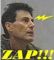
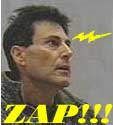
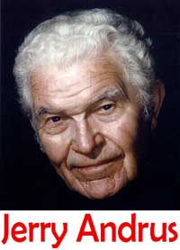

Como si necesitáramos que el asunto de Michael Jackson se volviera más extraño, el doblador de cucharas Uri Geller, quien se describe como “un amigo cercano” de Jackson, ahora afirma que hace unos años “hipnotizó” a la estrella pop, penetró a su inconsciente y extrajo su propio veredicto “indisputable” sobre los cargos de abuso a menores. Dice Geller que Jackson es inocente. ¿Los talentos de Geller nunca terminan? ¡Lo siguiente que sabremos es que toca la corneta y baila tap!
Supongo que así terminará el asunto de Jackson, ¿verdad? Geller describió sin aliento a los medios del Reino Unido cómo también “ejerció su influencia” sobre las cintas del próximo trabajo musical de Jackson, poniendo sus manos sobre las cintas. Eso debe lograrlo. Así que ahora sabemos que los problemas de ingresos de Jackson también están resueltos. En serio, era hora de que Geller de verdad hiciera algo real por alguien, ya que doblar cucharas los últimos 30 años no parece haber alterado nuestras vidas de ninguna forma significativa, al menos por lo que he notado. ¡Gracias, Uri!
Caray, Geller fue rechazado por David Blaine luego de aparecer para robarle el revuelo creado por estar encerrado en una caja. El asunto de Jackson apareció justo cuando a Geller se le estaban terminando las celebridades en cuyos hombros poder treparse. ¿Quién sigue? Me parece que por allá hay un príncipe llamado Carlos que necesita alguna ayuda…
El lector Peter E. Petersen, de Oslo, Noruega, nos aporta más datos sobre la noticia que publicamos sobre la recepción de fondos del estado del gobierno noruego por parte de Lena Skarning para iniciarse comercialmente como bruja. Escribe Peter:
Me tomé la libertad de enviarle un correo electrónico al ministro a cargo de tales asuntos. Algo sorprendido, recibí una carta de respuesta del Ministro Real Noruego del Comercio y la Industria, quien explicó que el “caso de la bruja” fue aprobado por la oficina correspondiente para que se le asignaran tales fondos del estado, luego de una evaluación por parte de KPMG, una de las compañías auditoras y consultoras de negocios más grandes del mundo. Aparentemene, KPMG consideró prometedores el concepto comercial y el potencial en el mercado. Su declaración de misión, de acuerdo con su sitio web oficial, es: “KPMG es la red global de firmas de servicios profesionales cuya meta es convertir el conocimiento en valor para beneficio de sus clientes, su gente y sus comunidades”.
No me molesté en preguntar a KPMG cómo creen que la bruja Lena Skarning convierte conocimiento en valor para el beneficio de la gente y las comunidades. Ni le pregunté a KPMG si han pensado en el hecho de que la promoción de su magia por parte de la Sra. Skarning puede violar las leyes de Noruega contra la falsa medicina. Aunque este caso de brujería es un “pez chico”, no veo razones por las que entidades importantes como el gobierno noruego y KPMG deberían salirse con la suya en prestar poca atención a los detalles y al sentido común. Si por casualidad se encuentra a algún ejecutivo de KPMG en algún cóctel, esta pequeña anécdota puee causarle tanto risa como vergüenza.

El lector Walter Beals escribe:
Con frecuencia entro en discusión con alguien en relación con mi escepticismo. Cuando lo hago, me gusta señalar que cuando a las personas se les enseña, o crean por sí mismos, una explicación a alguna parte del funcionamiento de nuestro universo, y se sienten cómodas con tal explicación (o sea, encaja con su visión del mundo preexistente y su lógica personal) tienden a aferrarse a esa explicación, y no sienten la necesidad de verificar su validez. Esto es especialmente cierto si lo explica alguien en quien confían o a quien admiran. Como ejemplo les pregunto qué es lo que causa las fases de la Luna. La mayoría de la gente me dicen con mucha confianza que efectivamente saben lo que causa las fases de la Luna. Y cuando les pregunto qué es, responden que las causa la sombra de la Tierra sobre la Luna. La respuesta no me sorprende; yo solía pensar que eso era verdad.
Si la persona con la que estoy hablando cree que es la sombra de la Tierra sobre la Luna, tomo con rapidez unas bolas de malabarismo qeu uso como modelos del Sol, la Tierra y la Luna para demostrar lo que pasa realmente. No, no hago malabares con las bolas durante la demostración… ¡pero eso me da una idea para un truco! Como sea, luego de demostrar lo que en verdad causa las fases de las lunas, la gente por lo general se sorprende de haber creído tanto tiempo algo que no era cierto. Por lo general parecen complacidos de que se les diga la verdad.
Cuando finalmente descubrí que había estado equivocado sobre lo que causaba las fases de la luna, la revelación no dio vuelta mi visión del mundo. Todo era muy parecido a como había sido en el pasado, pero yo entendía mejor mi entorno, este hermoso universo en el que vivimos. Si yo hubiera pertenecido a algún grupo cualquiera de personas cuya creencia principal dependiera de que la sombra de la Tierra cayera sobre la luna, podría haberme resistido más. Supongo que lo que quería decir es que deberíamos tener mucho respeto por quienes han logrado hacer preguntas sobre sus creencias y cambiarlas aunque significara poner patas arriba su mundo entero.
Estoy de acuerdo con Walter. Tengan en cuenta que algunas versiones de la religión requieren creer en la absoluta verdad de afirmaciones como, por ejemplo, que la Tierra (y todo lo demás) tiene 6008 años de edad, y que si eso no es cierto, para esa gente todo se viene abajo por completo. Por lo tanto, no pueden dudar nada de ello, de otro modo pierden todo aquéllo en lo que creen. No es algo que mucha gente pueda hacer.

(Esa edad de 6008 años es más menos algunos, ya que James Ussher (1581-1656 de la era común), arzobispo de Armagh, Irlanda, ya sea por ignorancia o perversidad, pasó directamente de 1 a.C. (antes de la Era Común) a 1 d.C. (de la Era Común), salteándose el año 0. Y, al calcular la fecha de nacimiento de Cristo, el arzobismo Ussher olvidó sumar algunos dígitos. Como resultado, hizo que Jesús naciera el año 4 antes de la Era Común. La vida es complicada.)

Aunque el webmaster Jeff Kostick los ha mantenido al tanto de lo que sucedió en The Amaz!ng Meeting 2 en Las Vegas [1], debo decirles que la reacción al evento ha superado nuestras expectativas. Todavía tenemos que compilar las encuestas de evaluación que nos presentaron, pero tengo la sensación que superar este encuentro el año próximo será una tarea difícil.
Debemos expresar nuestra sincera gratitud al destacado grupo de exponentes que dieron generosamente su tiempo y sus habilidades para convertir TAM2 en un suceso resonante. Vinieron desde Australia, el Reino Unido, y de todos los Estados Unidos. Nuestros invitados registrados vinieron desde Australia, Bélgica, Brasil, Canadá, Chile, Dinamarca, Alemania, Suecia, el Reino Unido y los Estados Unidos.
Nuestros voluntarios, quienes se ajetrearon por el hotel Tuscany hallando cosas imposibles, acordando conjunciones inusuales y difíciles y realizando en general una variedad de pequeños milagros para nosotros, merecen nuestro agradecimiento en abundancia. Destacaré sólo a una, Lisa Kiefer, quien también estuvo presente el año pasado y se presentó de nuevo con nosotros este año con su esperado entusiasmo. Estamos agradecidos con todos ustedes, amigos, y esperamos verlos también el año próximo.
El personal de la JREF (Andrew Harter y Linda Shallenberger) fueron asistidos con gran capacidad por Karl Shallenberger, ¡quien probó tener sorprendentes y hasta entonces no reconocidos talentos como subastador!
Los antiguos internos de la JREF Kelli Kirkle y Jonathan Pritchard estuvieron allí, útiles como siempre. Y no hubieramos podido realizar el Amaz!ng Meeting sin que nuestro amigo Jerry Andrus organizara el encuentro en su forma especial. ¡Gracias, Jerry!
Hal Bidlack, como el año pasado, estuvo en todas partes. Trajo a su hijo Chris, y juntos acometieron los deberes de anfitrión y las tareas generales de preparar a los exponentes y acercarlos a los micrófonos. Chris también ejerció como fotógrafo oficial, y tendrá disponibles sus fotos a la brevedad para aquellos que pudieren estar interesados.
Mis excelentes amigos y colegas, Penn y Teller, recorrieron el lugar. La gira de The Slammer, la subasta de algunos recuerdos de P y T, y su donación muy generosa de más de 300 entradas para su muy exitoso espectáculo de Las Vegas recaudaron una suma de dinero muy significativa para ayudar a apoyar a la JREF. Y como si no tuvieramos magia suficiente gracias a P y T, el Maestro Mago Lance Burton nos dio entradas para su espectáculo y también una muestra personal en vivo de sus prodigiosos talentos. Siempre he considerado a Lance un príncipe entre los hombres, así como entre los magos.
Difícilmente pueda hacer un resumen del encuentro sin mencionar a Fred Durante III, quien tanto el año pasado como éste fue la primera persona en registrarse para el feliz evento. Es tan bueno ver a Fred allí, sonriendo de oreja a oreja ante todo lo que pasaba. Él sabe cómo divertirse, ¡y los encanta que haya elegido TAM1 y TAM2 para ello! Pero, Fred, ¿dónde está la registracion para TAM3?
No tengo el tiempo ni las fuerzas en este momento para agradecer a cada persona que ayudó a convertir nuestro evento en un éxito semejante. Sin embargo, debo decirles que Michael Shermer, de Skeptic Magazine, aceptó ser también el expositor destacado del encuentro del año próximo, y Julia Sweeney (a quien coaccionamos para ser una expositora casi a última hora) declaró que no iba a perderse los próximos encuentros auspiciados por la JREF. Julia encantó a todos a lo largo de todo el encuentro, e incluso Hal Bidlack estuvo de acuerdo en que permitirle exceder su tiempo asignado fue una sabia decisión. Fue divertida, apasionada, y de importancia extrema para nosotros porque expresó su comprometida conversión de creyente total a escéptica. ¡Qué mujer!
Fuimos muy, muy afortunados en tener un grupo tan estelar de amigos trabajando para nosotros y con nosotros, un grupo formado por la siempre confiable Linda Shallenberger. Mientras escribo esto, ella está inclinada sobre una pila de papeles, tratando de balancear los libros de la JREF y de darle algún sentido a la pila de recibos que la rodean. Linda dio todo de sí, como de costumbre, y estamos muy agradecidos por su dedicación y su trabajo duro. ¡Felicitaciones!
Aunque no hemos decidido aún el lugar para TAM3 porque falta examinar las encuestas, lo anunciaremos pronto… ¡para que Fred Durant pueda registrarse primero, como siempre!
Amigos, como les advertí la semana pasada, la columna de esta semana debía ser breve. Hemos tenido mucho trabajo para ponernos al día al estar ausentes por toda una semana, pero prometo que se los compensaré en las próximas semanas. ¡Sigan con nosotros!

Notas
Comentarios
Comments powered by Disqus